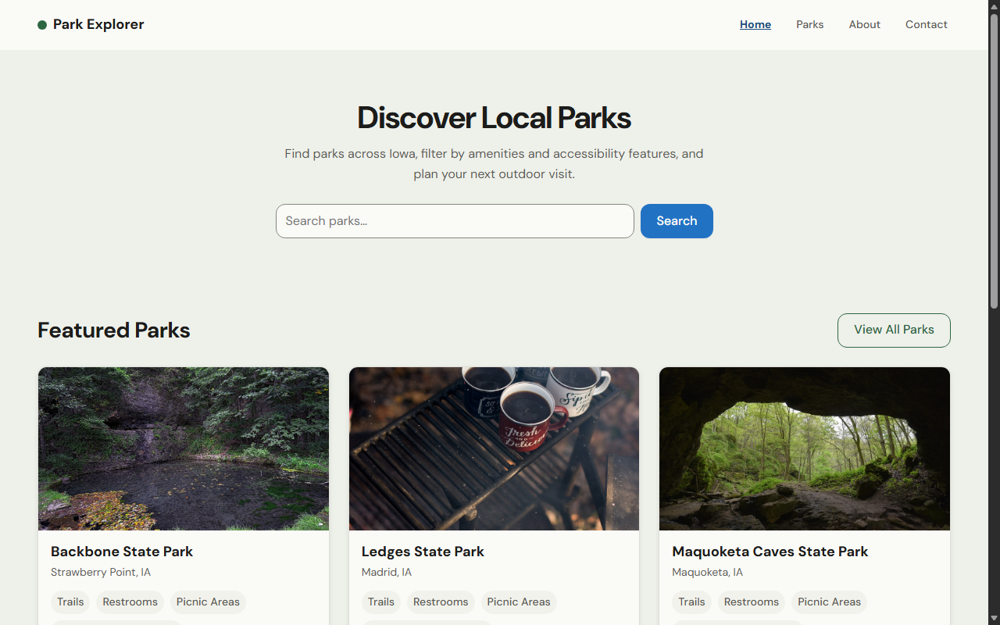
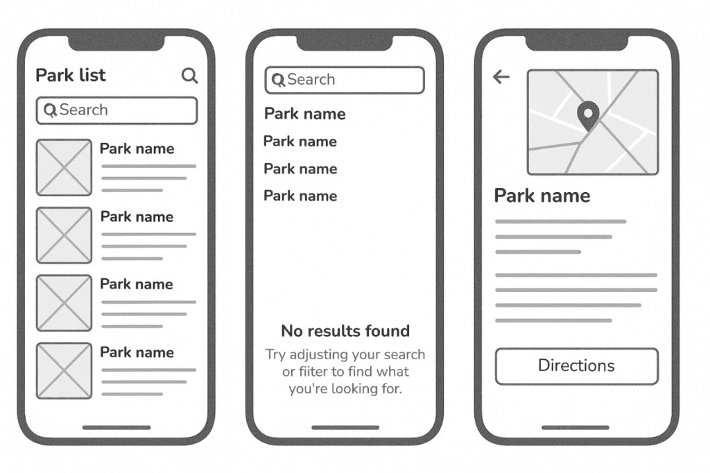
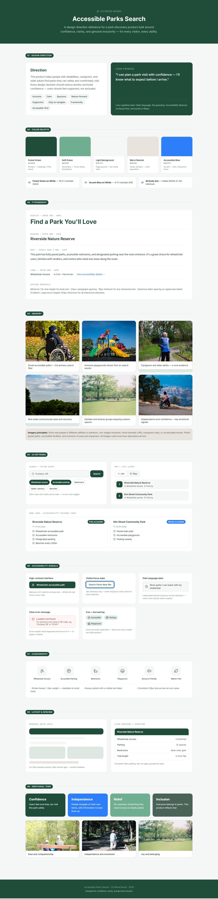
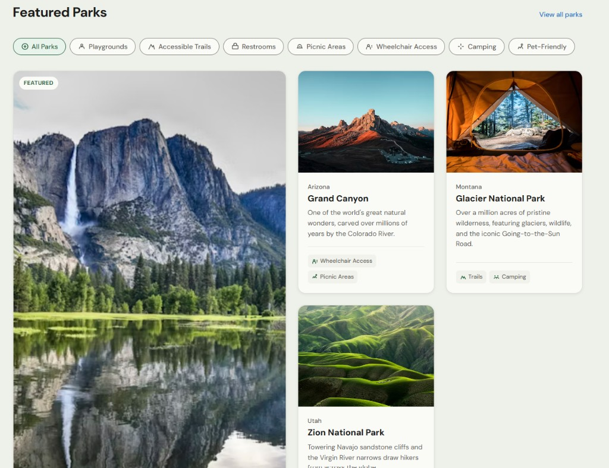
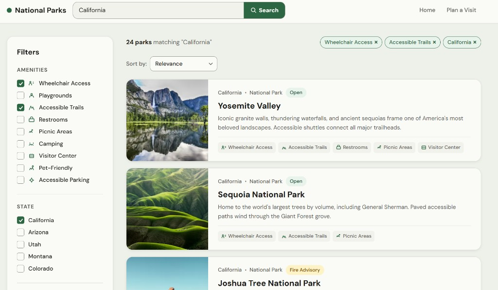
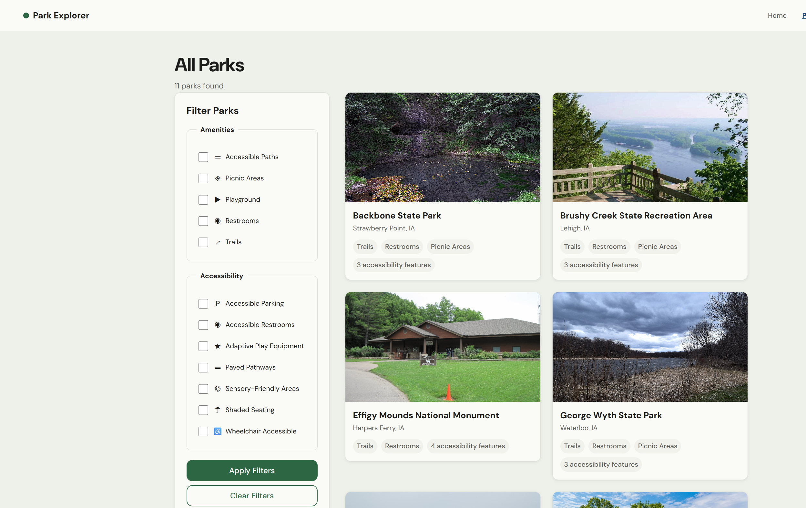
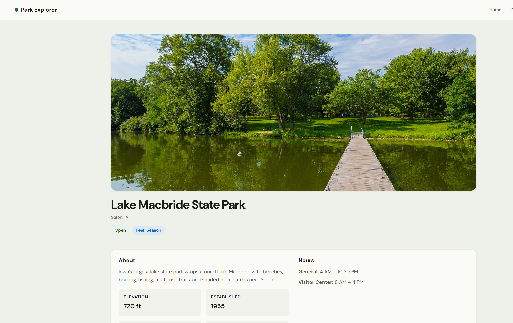

UX Design Web App Accessibility
Accessible Parks Search for Iowa
An accessible directory that helps visitors discover Iowa parks, filter by amenities and accessibility features, and plan visits with confidence before they arrive.
Park information for Iowa state parks is spread across agency sites, PDFs, and third-party listings — and accessibility details are especially hard to find. I designed Park Explorer to bring search, filtering, and accessibility metadata into one WCAG 2.2 AA experience.

Challenge
Visitors planning outdoor trips often cannot tell whether a park offers paved pathways, accessible restrooms, adaptive play equipment, or sensory-friendly areas until they arrive. Existing resources require checking multiple websites, and filter tools rarely treat accessibility as first-class metadata.
My goal was to reduce that uncertainty with a searchable, filterable directory built for keyboard and screen reader users — without sacrificing visual clarity on mobile.
Process
The workflow moved from research and information architecture into visual exploration, then into token-based design, React development, accessibility iteration, and deployment.
- Research
- IA & wireframes
- Visual style
- Build & iterate
- Deploy
- Audit existing park resources and define amenity/accessibility metadata
- Sketch and wireframe key flows in Figma
- Establish color, type, and spacing tokens for WCAG 2.2 AA
- Develop in React; refine detail layout and mobile filters from feedback
- Publish on Netlify with a conformance accessibility statement
Sketching
Sketching helped me explore search, filter, and park-detail layouts quickly before moving into high-fidelity screens. Early explorations focused on how visitors compare amenities across parks and how much accessibility detail to surface on the card versus the detail page.

Visual Style Development
The visual direction emphasizes calm outdoor tones, high contrast for readability, and consistent spacing for touch targets. My Figma design system documents direction, color, typography, imagery, UI components, and accessibility principles in one reference.

Design Iteration
Early high-fidelity screens explored a national-parks showcase and a persistent filter sidebar. The shipped Iowa demo simplified discovery on the home page and moved mobile filters into a slide-in panel while keeping the same amenity and accessibility metadata.
On the park detail page, an early build stacked About, Amenities, Accessibility, and Hours as separate full-width cards. I refactored those blocks into a compact two-row layout that preserves semantic headings and 44px touch targets on smaller screens.
Home and featured parks

Search and filters


Park detail layout

AI-Assisted Development
Cursor supported rapid prototyping and refactors — especially the park detail layout and mobile filter drawer — while I kept accessibility requirements explicit in each prompt.
Example prompt: compact park detail layout
Refactor the park detail page so About, Hours, Amenities, and Accessibility sit in a single compact card with two multi-column rows instead of four stacked full-width sections. Preserve WCAG 2.2 AA contrast, focus styles, semantic headings, and 44px touch targets. Stack to one column on mobile.
Gallery
Key screens from the shipped Park Explorer experience.
Deployment
Park Explorer is live on Netlify as a public demo covering Iowa state parks with real amenity and accessibility metadata, keyboard-accessible search and filters, and a dedicated accessibility statement (opens in new tab).
Reflection
This project reinforced that accessibility metadata deserves the same information architecture as amenities and hours — not a footnote buried on a separate page. The biggest lesson was that reducing scroll and cognitive load on mobile matters as much as checkbox coverage for screen readers. Next, I would test earlier with visitors who rely on mobility aids and expand coverage beyond state park listings.